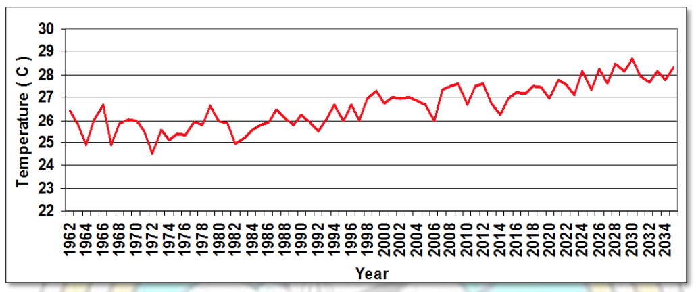
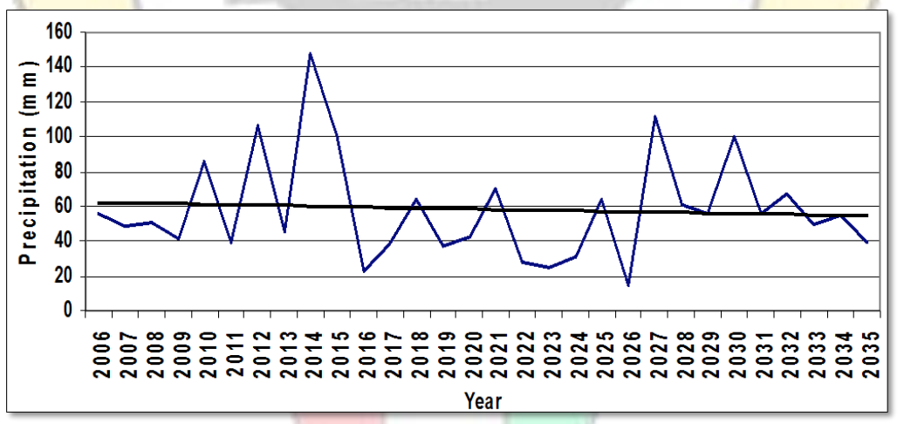

The State of Kuwait - November 2015
In accordance with Decision 1/CP.19 and based on the information mentioned in decision 1/CP.20 which invites all parties to submit their Intended Nationally Determined Contributions for the period post-2020. Kuwait prepared and submitted this document to join the world countries the march of limiting climate change based on its sustainable development plans and programs at the national level until 2035.
The State of Kuwait is seeking to adapt with the negative impacts and consequences of climate change. Also it’s working towards moving to a low carbon equivalent emissions economy system based on its future business as usual emissions over the period 2020-2030. Through its efforts to achieve developmental, environmental, social and economic priorities under the framework of sustainable development. Therefore, the State of Kuwait attaches a great importance on diversifying the sources of energy production in the country, which contributes in avoiding the increase of greenhouse gases emissions by 2035.
The State of Kuwait is considered one of the first countries to sign the United Nations Framework Convention on Climate Change; it joined the Convention on 28 Dec.1994 and entered into force on 28 Mar. 1995, and the state of Kuwait ratified Kyoto Protocol under the United Nations Framework Convention on Climate Change on 11 Mar. 2005, and entered into force on 9 Jun. 2005. The State of Kuwait shares the concerns of the international community in limiting the negative impacts of climate change, it recognizes that the global nature of climate change calls for maximum cooperation and participation in an effective international response in implementing the terms of the United Nations Framework Convention on climate change (UNFCCC) from all countries of the world in accordance with common but differentiated responsibilities as stated in Article 4 paragraph 1 , which says: “All Parties, taking into account their common but differentiated responsibilities and their specific national and regional development priorities, objectives and circumstances."
In this context the standards of sustainable development of the State of Kuwait will be taken into consideration, as it is a developing country with a single source of income as the Convention stated in Article 4 .8, which says: "In the implementation of the commitments in this Article, the Parties shall give full consideration to what actions are necessary under the Convention, including actions related to funding, insurance and the transfer of technology, to meet the specific needs and concerns of developing country Parties arising from the adverse effects of climate change and/or the impact of the implementation of response measures" and paragraph (h), which states that "Countries whose economies are highly dependent on income generated from the production, processing and export, and/or on consumption of fossil fuels and associated energy-intensive products"
Kuwait is located in the northeast of the Middle East and North Africa between latitudes 28° 30" and 30 °5" and longitudes 46 °33" and 48 °30" in the east. The total area of Kuwait is 17,818 km2, including the nine unpopulated islands in the Arabian Gulf region. Kuwait’s Government is considered constitutional state, where its Constitution has a democratic appeal which is developing rules that controls legislative, executive and judicial authorities.
As a results of the geographic location of the State of Kuwait, climatic conditions, geological nature, the characteristics of its soil, the attributes of vegetation cover and the patterns of land use, Kuwait suffers from these numerous environmental challenges including higher temperatures rates, higher airborne dust and sand falling ratio, increased frequency of sandstorms, lack of seasonal rains, limited water resources, increased desertification and decline of vegetation cover.
Note that these environmental challenges have been aggravated dramatically with the beginning of the twentieth century as a result of global climate change. The State of Kuwait is suffering from a rise in average temperatures. It is expected that the annual average temperature increases by 1.6 C° during the period from 2010 to 2035 to reach its highest average temperature which is 28.7 C°. In summer months (May to October) the maximum temperature reaches to more than 50 C° in the shade (Figure 1).

Figure 1: annual Average temperatures expected during the period 1962-2035
The increasing rise in average temperatures is accompanied by scarcity and lack of rainfall. Where the rate of annual rainfall is 116 mm and it is expected to decrease by 2 mm per year in the coming years, which will cause a decline in the groundwater level in the State of Kuwait (Figure - 2).

Figure 2: The average amount of annual rainfall expected during the period 2006-2035
All previous factors lead to increase in the percentage of drought and desertification in the State of Kuwait. Which results in the intensity of the frequency of dust storms in the state. Dust fallout rate is equivalent to 55 tons / km2 per year in total around one million tons of dust falling annually. Moreover, it is expected that the intensity of the frequency of dust storms will increase as a result of the negative impacts of climate change. The impacts of climate change have begun to show in a tangible manner in the form of urban challenges, where the sand storms became more frequent with the rising heat waves and the drop of rainfall rate in winter.
Kuwait relies entirely on sea water desalination process to obtain fresh water where is 93% from the water supply comes from the desalination of sea water, while the remaining percentage comes from non-renewable groundwater due to scarcity of rainfall. However, the seawater desalination process consumes high energy with an adverse impact on marine and coastal ecosystems.
Global sea levels could rise by 1-3 meters during this century according to the Intergovernmental Panel on Climate Change (IPCC). Due to the nature of the low-lying coastal of Kuwait, it is at risk to sea levels rise associated with climate change. With a rise of (0.5 - 2 meters) at sea level. Kuwait could lose 1.4 -3% of its coastal territory, which affects 5% of its GDP.
Kuwait’s population reached 3.368572 in 2013 with a steady increase over the past two decades by growth rate around 4.1%. The expected increase in population growth rate is combined with urban development and rapid provision of basic services to the population. In the light of the global decline in oil prices and the high cost of subsidies ratio in energy, water and housing prices, the State of Kuwait is facing many developmental challenges, including diversifying and enhancing work opportunities that provides safe working environments for citizens and residents, urban planning and housing, infrastructure and promoting national capacities to monitor and implement developmental plans.
It is worth mentioning that the state of Kuwait is considered a country with a single source of income, it relies mainly on the extraction and sale of oil in its public budgets. Thus, the state’s economy is vulnerable to oil prices fluctuations in supply and demand, and Kuwait’s industrial base is based on the extraction, refining and exporting of oil with an export revenue of more than 90% of the country total revenues, the value of the oil contribution to GDP represents 51-55%. Also Kuwait is entirely dependent on fossil fuels for energy production by 83.5% of liquid oil and 16.5% of natural gas.
The contribution of energy sector activities is equivalent to 95% of CO2-eq emissions from the total national emissions as illustrated in Figure 3. It turns out that the main factor of emissions in the State of Kuwait is the heavy reliance on liquid petroleum fuels in most sectors, Also Current sources for energy production in the country relies on oil by 90% and natural gas 10%, electricity and water production plants Consumes 70% of oil and its derivatives, while the remaining 30% comes from natural gas, in addition to transportation sector which relies 100% on liquid petroleum products.
The State of Kuwait is ambitious to move to a low carbon equivalent economy and to avoid the increase in greenhouse gas emissions compared to business as usual patterns, based on plans and development projects in the country, and it is working on achieving this goal on a voluntary basis through the implementation of some projects and enacting laws and regulations, according to its national circumstances, which is Subjected to the availability of financial, technical and technological support through the mechanisms of the Convention. Note that the amount of the reduction resulted from the proposed projects will be estimated later.
Kuwait seeks to contribute in avoiding increasing emissions through projects and development plans within the most contributing sector to GHG emissions in the country which is the Energy sector and its activities, that represents 95% of the country’s total emissions, these projects are:
Kuwait began the formal procedures to examine the law of reducing part of government gasoline subsidies starting from the beginning of 2016 and to study the possibility of a gradual reduction of subsidies on electricity and water, which will contribute significantly to rationalize consumption and reducing greenhouse gas emissions.
The Kuwaiti parliament recently adopted the Environment Protection Law No. (42) for the year 2014, amended by Law No. (99) for the year 2015, where the law is aimed to protect the environment and its resources, pollution control, and enhance natural resources, protection of society, human health and living organisms (Environment Protection Law, KEPA 2014), the law consists of 181 article dealing with development and environmental issues, and the protection of land, water and air environment from pollution , biodiversity, environmental management, penalties and civil liability and compensation for environmental damage, and related general provisions.
Some chapters of the Environment Protection Law 42/2014 discuss the energy sector directly and indirectly as listed in article (122) and (123) of Environment Protection Law mentioned the need to use energy-saving systems in the new state facilities. Also the law prevents importing any hardware or equipment that does not match the specifications of energy conservation.
The Environmental Protection Law in Article (111) urged the relevant state authorities to develop environmental strategies, action plans and programs within the scope of their work.
The articles of the law show the interest of the state and its orientation toward reducing greenhouse gas emissions from the energy sector by seeking to improve the management of energy consumption through the establishment of systems and rules for the devices used and the efficiency of energy consumption in buildings (construction and design materials, air-conditioning systems and lighting … etc.).
The environmental law paves the way to develop, adopt and implement a national strategy to reduce the state’s energy consumption and diversify energy sources, particularly increasing the proportion of clean energies, to achieve His Highness vision the Emir of Kuwait Sheikh / Sabah Al-Ahmad Al-Jaber Al-Sabah may God protect him, where he announced that the state of Kuwait is seeking to fulfill the increasing demand of its energy needs from renewable energy sources by 2030.
Kuwait seeks to move to low-carbon economic system and adaptable to climate change to enhance and protect its natural resources and achieve sustainable development standards, were it is working hard to adapt with the impacts of climate change from high temperatures, lack of rainfall, sea level rise, lack of water resources and the increasing severity of dust storms.
With the State of Kuwait recent issuance of Environment Protection Law No. 42/2014 out of its believe in the importance of maintaining the ecological balance in the country to create a healthy environment for the citizens and to maintain the sustainability of its natural resources for future generations. The law gave utmost importance in some of its terms to topics related to adapting with the adverse impacts of climate change phenomenon where it managed the use and consumption of natural resources. In the area of protecting the lands, articles (40) and (41) of the law discussed regulating the camping process and land use in grazing or any other activities that may harm the soil, which contributes in reducing the phenomenon of desertification and soil vulnerability.
In addition, articles (102) and (103) are specified for managing natural reserves in order to maintain biodiversity. Regarding water resources management Articles (88) and (89) have set the foundations to develop a program for water management in the country and the standards and regulations for water conservation in order to adapt to the scarcity of water resources in the country. To adapt to the expected rise in sea level and its impact on the coasts of the country articles (66) and (99) of the Law are dedicated for the marine environment and the need to create a national network for monitoring and regulating the marine environment and conducting studies to monitor sea level rise. Considering that the State of Kuwait suffers from numerous crises and natural disasters such as sand and dust storms and flash floods waves the law established Article (118), which states the needs to prepare emergency plans and crises and natural disasters management plans
Regarding food security, the state has issued laws related to entirely prevent fishing in Kuwait’s bay to maintain biodiversity and fish stocks. Furthermore, there are laws specialized in banning fishing of some species of fish and shrimp in the territorial waters and allows it only in specified seasons to prevent the depletion of fish stocks.
The legislator also seeks through the Environment Protection Law No. 42/2014, as amended some of its provisions in Law No. 99/2015 to promote environmental culture in Kuwait society and spread information relating to the environment for public in order to change some the behavioral patterns among the citizens and residents in order to increase public awareness with the concept of natural resources sustainability and the proper usage of it.
For the state of Kuwait to be able to implement the procedures of mitigating greenhouse gas emissions and adapting to climate change impacts and achieve sustainable development criteria, Kuwait needs the availability of technological and financial support by the relevant existing institutions under the Framework Convention such as technological mechanisms consisting of the Technology Executive Committee (TEC) and the Climate Technology Centre & Network (CTCN), as well as the Green Climate Fund (GCF).
In accordance with provisions of Article (4.7) of the Framework Convention which states that the extent to which the developing countries, including the State of Kuwait, fulfill its obligations under the Convention will depend on the developed party’s providence of support to developing parties in the field of finance, technology transfer, so as to ensure an effective global cooperative action on climate change.
The State of Kuwait will proceed in preparation of low-emission development strategy (LEDs) and an action plan for adaptation. The second national communication project and the development strategy (Kuwait vision in 2035) will provide the general framework for the preparation of these plans. The Environment Public Authority is currently preparing the regulations and guidelines for the Environmental Protection Law (42) for the year 2014, amended by Law (99) for the year 2015 and these Regulations will include particular topics of climate change such as reporting system of emissions, adaptation and mitigation.
The state of Kuwait assigns great importance to international efforts that deal with global warming, and believe that addressing this phenomenon is a common but differentiated responsibility among the countries of the world. Therefore, the State of Kuwait is keen on increasing its capacity in dealing with issues related to climate change simultaneously with its efforts in adapting with the negative impacts of this phenomenon and its consequences on the social and economic aspects. Also, Kuwaits current total emissions are merely about 0.27% of the total global emissions in 2013. And despite the fact that Kuwait didn’t contribute to this phenomenon, Kuwait’s geographical location made it vulnerable to the impacts of climate change that began to appear obviously in recent years by a significant rise in temperatures, scarcity of rainfall and increased sand and dust storms that paralyze life in the state and harm public health of the citizens and residents, which leads to increased losses and economic burdens on the state, in addition to the possibility of losing parts of the coastline in the country as a result of rising sea levels, which might endanger about 174 thousand individual !!
The State of Kuwait will suffer from economic and social consequences of negative impacts of response measures, where Kuwait is considered one of the countries that its economy dependent on oil and will be affected negatively from international policies and procedures of the UNFCCC. The Secretariat of OPEC as well as many international consultancy houses have prepared several studies indicating in its wholeness that as a result of the intensive focus on fossil fuel sectors, particularly oil and oil products, the countries that produce and exporter oil will be affected enormously by the measures which the countries will be pursuing especially the developed ones from policies and procedures to reduce greenhouse gas emissions.
Given the national circumstances of the state of Kuwait, which is currently facing numerous economic, social and environmental challenges. Due to the growing population and the increasing demand of resources, particularly water and energy, which is accompanied with the decline in the national income because of mitigation policies of developed countries. Also taking into consideration the state’s responsibility to provide employment opportunities, housing and to maintain the citizen’s living standard, the Intended Nationally Determined Contributions of the State of Kuwait is considered very ambitious and fair.
The state of Kuwait submitted its INDCs based on the development plans and projects of the state that will be presented later to the Kuwait National Parliament for adoption. These contributions are conditioned in providing financial, technical and technological support from developed countries within the mechanisms of the UNFCCC. The State of Kuwait preserves the right to reconsider these contributions based on future developments in the state’s own national circumstances, the state’s general policy and in case of any amendment to the Convention or related decisions of the Conference of the parties before it enters into force in a manner that includes rules or provisions that vary with the assumptions under which those contributions are submitted.